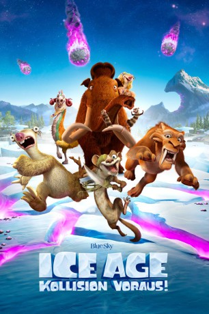

gesehen am 27.10.2016
gesehen am 27.10.2016Alternativ: Ice Age: Collision Course gesehen am 27.10.2016
 
 IMDB-Wertung: 5.7 / 10
IMDB-Wertung: 5.7 / 10  Metascore:
Metascore: 
Noch immer ist Rattenhörnchen Scrat mit seiner heiß geliebten Nuss beschäftigt. Doch dieses Mal setzen seine Missgeschicke eine Kette von Ereignissen in Gang, die sogar die ganze Welt bedrohen: Denn bei seinen Abenteuern stößt er zufällig auf ein UFO, das im Eis eingefroren war, bringt es zum Starten und schießt damit ins Weltall. Dort sorgt er dafür, dass nicht nur viele kleine Meteoriten auf die Erde stürzen, sondern auch ein riesengroßer droht, den gesamten blauen Planeten zu vernichten. Für das Mammut Manny, Faultier Sid und Säbelzahntiger Diego beginnt die aufregende Suche nach einer Möglichkeit, die Katastrophe abzuwenden. Dabei stehen ihnen viele alte und neue Kumpanen zur Seite. Bei der Absturzstelle eines Meteoriten, der vor langer Zeit schon auf der Erde aufprallte, machen sie dann eine erstaunliche Entdeckung…
Jahr: 2016
Dauer: 94 Minuten
FSK: 0
Land: USA Studio: 20th Century FoxTonspuren:
Untertitel:
Auflösung: 1080p (1920x800) Größe: 5089 MB
Genre: Animation/Trick, Abenteuer, Komödie, Familie, Sci-Fi
Regisseur: Mike Thurmeier, Galen T. Chu
Drehbuch: Splinter Films
Soundtrack:
Darsteller:
 Stephanie Beatriz als Gertie
Stephanie Beatriz als Gertie Neil deGrasse Tyson als Neil deBuck Weasel
Neil deGrasse Tyson als Neil deBuck Weasel Adam Devine als Julian
Adam Devine als Julian Max Greenfield als Roger
Max Greenfield als Roger Queen Latifah als Ellie
Queen Latifah als Ellie Denis Leary als Diego
Denis Leary als Diego John Leguizamo als Sid
John Leguizamo als Sid Jennifer Lopez als Shira
Jennifer Lopez als Shira Nick Offerman als Gavin
Nick Offerman als Gavin Keke Palmer als Peaches
Keke Palmer als Peaches Josh Peck als Eddie
Josh Peck als Eddie Simon Pegg als Buck / Pythagorus Buck / Robo Buck
Simon Pegg als Buck / Pythagorus Buck / Robo Buck Carlos Ponce als Mariachi Beaver
Carlos Ponce als Mariachi Beaver Melissa Rauch als Francine
Melissa Rauch als Francine Ray Romano als Manny
Ray Romano als Manny Seann William Scott als Crash
Seann William Scott als Crash Wanda Sykes als Granny
Wanda Sykes als Granny Randy Thom als Hyrax Minister
Randy Thom als Hyrax Minister Chris Wedge als Scrat
Chris Wedge als Scrat Holly Dorff als Additional Voices
Holly Dorff als Additional Voices Rif Hutton als Additional Voices
Rif Hutton als Additional Voices Hope Levy als Additional Voices
Hope Levy als Additional Voices Ashley Peldon als Additional Voices
Ashley Peldon als Additional Voices Juan Pope als Additional Voices
Juan Pope als Additional Voices Ruth Zalduondo als Additional Voices
Ruth Zalduondo als Additional Voices Edie Mirman als Additional Voices
Edie Mirman als Additional VoicesDatei: X:\Kinder Collections\Ice Age\Ice Age 5 - Kollision voraus! (2016, FSK0, 1920x800).mkv seit 21.10.2016
Festplatte: Kinder-Filme+Trick
 Es gibt insgesamt 12 Filme in der Gruppe 'Kinder Collections\Ice Age'
Es gibt insgesamt 12 Filme in der Gruppe 'Kinder Collections\Ice Age'